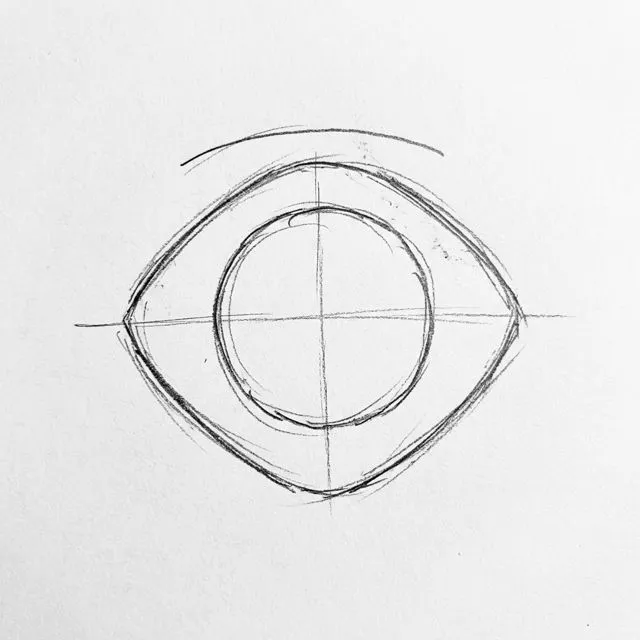
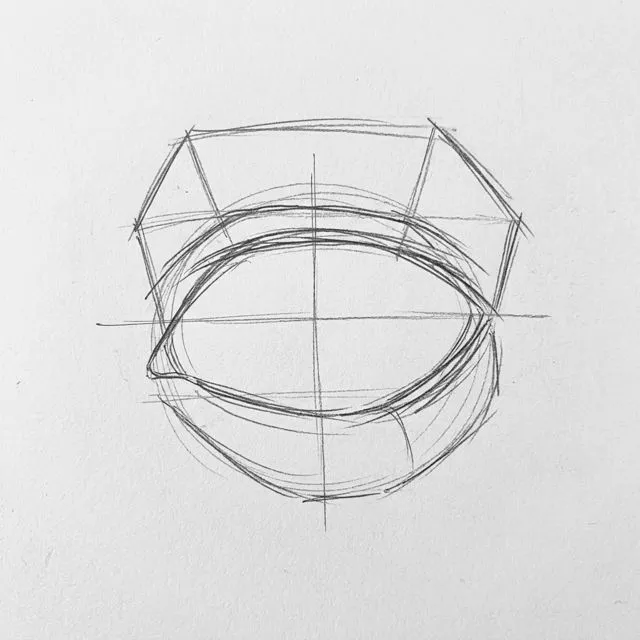
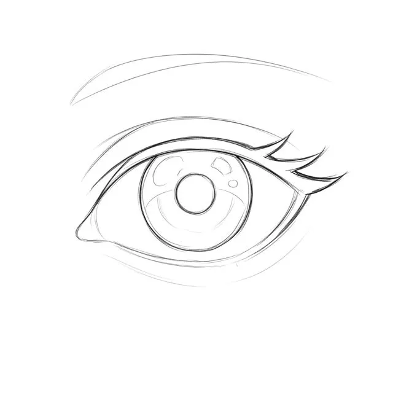
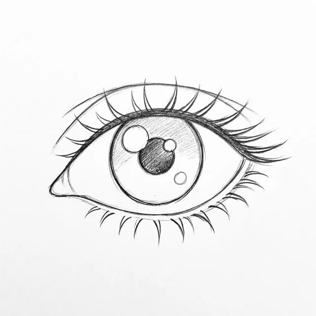
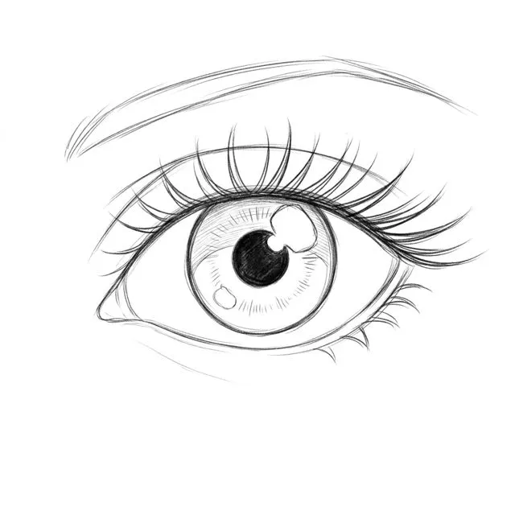
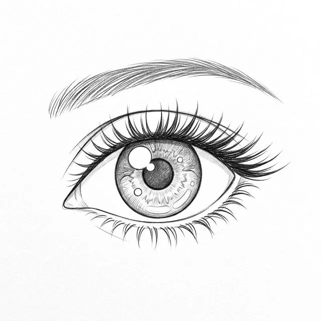

Trace anime on real paper
TracePal lays a faint anime line-art guide over your paper through the camera. You watch the screen and draw every line with your own pencil.
Get it on Google PlayFrom phone to paper
No stand? A cup or a stack of books holds the phone. The app never draws for you and does not make pictures with AI; the drawing is yours.
Before you start
- Pick a template, a lesson or your own text300+
- Choose Sketch or Trace2 modes
At the desk
- Prop the phone over your sheetcup, books
- Fit the guide to the paperA4, A5
- Lock guide and focushold 1 s
While you draw
- Follow the faint lines in pencilyour hand
- Tap Done to save or shareSketchbook
A drawing on your own paperyours
Sketch uses the camera to place the guide over real paper. Trace turns the screen bright: lay thin paper on top and follow the lines, no camera needed.
Anime Eye Basics
One of 40+ step-by-step lessons in the app, from anime eyes and side-view faces to chibi characters, action poses, cute animals and food. Every step has its own picture: lines build up layer by layer, with a step bar and a draft so you can stop and continue later. Tap a step to see it.
Anime Eye BasicsStep 123456 of 6






In the app this sheet sits over your paper, one layer at a time.
Tools for a steady guide
Fade it until you see your pencil
Set the guide's opacity, zoom, drag and rotate it to fit your sheet.
Fit A4 or A5
Snap the guide to your paper size. The app remembers your last position for next time.
Lock it in place
Lock the guide and focus so a stray touch does not shift it. Hold the lock button for one second to unlock.
Light for dim rooms
Turn on the flashlight; the screen stays awake while you draw.
Record a time-lapse
Film the drawing as it happens. It plays back sped up, and the video and the finished photo go to your Sketchbook.
Sakura
Trace your own words
Text Art turns a name or a quote, up to 40 characters, into letters to trace. Pick one of four fonts, outline or solid.
Share in one tap
Send the photo of your paper, with a small TracePal strip, or the time-lapse video to the apps you use most.
See your progress
The home screen counts the drawings you have finished and adds up your total drawing time.
Use your own photo
Pick a picture through the system photo picker and trace it. It stays on your phone.
Questions, answered
Does the app draw for me? No. It shows a faint guide and you draw every line with your own pencil. Nothing is generated with AI.
What do I need? Your phone, a sheet of paper (A4 or A5 works best), a pencil and something to prop the phone on: a stand, a cup or a stack of books.
Can I draw without the camera? Yes. Trace turns the screen into a bright lightbox; lay thin paper on the screen and follow the lines.
Does my camera picture leave the phone? No. Camera frames are processed on the device and never uploaded. Drawings and time-lapse videos are saved on your phone. Read the privacy policy.
How many lessons are there? Twelve step-by-step lessons, each with a picture for every step. Some are free, the rest are Premium, and one Premium lesson is free every day.
Does it work offline? A starter set of templates and lessons is built into the app, and Text Art works anywhere. The full library loads when you are online.
Which permissions does it ask for? Camera, for Sketch only; Trace works without it. Notifications on Android 13 and later, asked once after your first saved drawing, and only to tell you about new templates and lessons; you can say no. Storage only on Android 9, to save drawings to Pictures.
Is it free? Yes, with ads. Premium is optional: it removes ads and the TracePal strip on shared photos, and unlocks Premium templates and lessons. Manage or cancel it in Google Play.